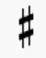
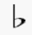
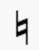
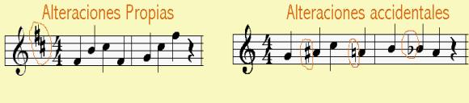

Las alteraciones son signos que alteran el tono de las notas, subiéndolo o bajándolo.
Las alteraciones más usuales son:
|
 |
El sostenido sube
medio tono (un semitono) al sonido de una o varias notas. |
|
 |
El bemol baja medio
tono (un semitono) al sonido de una o varias notas. |
|
 |
Otra alteración es el becuadro
que sirve para cancelar una orden de alteración. Es decir anula la orden de
un sostenido o de un bemol. |
Las alteraciones pueden ser propias o accidentales. Las alteraciones propias son aquellas que se colocan al principio del pentagrama junto a la clave y afectará a todas las notas del mismo nombre según la línea o espacio donde esté colocada, aunque sea otra octava. Las alteraciones accidentales son las que van colocadas delante de la nota que se desea alterar afectando sólo a dicha nota y a las que estén a continuación con el mismo nombre dentro del mismo compás.

Puede que en alguna partitura
encontréis otras alteraciones distintas a estas, pero son menos usuales y no
suelen aparecer en Primaria, es el caso del doble sostenido o el doble bemol.